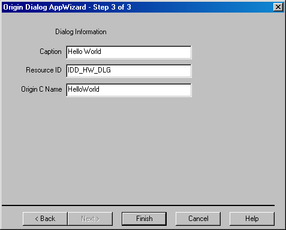

Specifying the Dialog Caption, ID, and Name
After you have specified the type of resource you want to create on the first page and specified the programming language you want to use to control your dialog on the second page, you then specify the dialog caption (or title), the resource ID string, and the program name for your (main) dialog on the third page of the Origin Dialog AppWizard.

- Enter the desired dialog caption in the Caption text box. The caption displays in the title bar of the (main) dialog.
- Enter a resource ID string for the dialog in the Resource ID text box. The resource ID string will be added to the Symbol header file as a #define directive. The Origin Dialog AppWizard will automatically set the correct numeric ID value in the #define directive. You need only specify the resource ID string. For a (main) dialog, use the notation: IDD_STRING where IDD_ is literal and STRING can be any letters or numbers. You can type the characters in uppercase, lowercase, or mixed case. The AppWizard and Visual C++ will maintain the case of the characters that you enter.
- Enter the desired Origin C name for the dialog (wizard) in the Origin C Name text box. The text that you enter in the Origin C Name text box is the name you will use to communicate with the dialog (wizard) inside your Origin C program in Origin. The Origin Dialog AppWizard will automatically define an Origin C Dialog derived class for this (main) dialog (wizard) based on the text that you enter in the Resource ID and Origin C Name text boxes. This name can not contain spaces. It is also case-sensitive.
After entering the above dialog related information click the Finish button (if creating a simple dialog) or the Next button (if creating a tabbed dialog or wizard) at the bottom of the Origin Dialog AppWizard. If you click the Finish button the AppWizard closes and the New Project Information dialog box opens. Peruse the information in the New Project Information dialog and then click OK to create you dialog resource and Visual C++ project. If you are creating a tabbed dialog (or a wizard) and click Next you will then be prompted to enter tab (or page) related information for each tab (page) in your tabbed dialog (wizard).